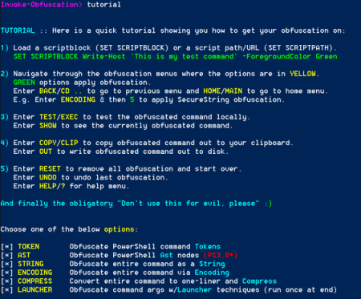
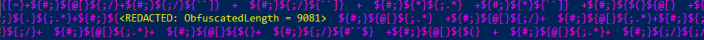

Invoke-Obfuscation
GitHub:
https://github.com/danielbohannon/Invoke-Obfuscation
PS> (new-object System.Net.WebClient).DownloadFile("https://github.com/danielbohannon/Invoke-Obfuscation/archive/master.zip", "$env:userprofile\desktop\file.zip");$ZippedFilePath = "$env:userprofile\desktop\file.zip";$DestinationFolder = "$env:userprofile\desktop\";[void] (New-Item -Path $DestinationFolder -ItemType Directory -Force);$Shell = new-object -com Shell.Application;$Shell.Namespace($DestinationFolder).copyhere($Shell.NameSpace($ZippedFilePath).Items(),4); Remove-Item -Path "$env:userprofile\desktop\file.zip";cd $env:userprofile\desktop\Invoke-Obfuscation-master;Import-Module ./Invoke-Obfuscation.psd1;Invoke-Obfuscation
*it is better extract it in a module path of $env:PSModulePath
IMPORTANT:
If we applied a method to a script block, and then re-apply another method, the new method will be appended to the
previous script block, and create a very large result.
 To get around this, after applying one particular encoding method, use the
“RESET” option to clear previous encodings, this way, they won’t “pile up” on one another.
Invoke-Obfuscation> RESET